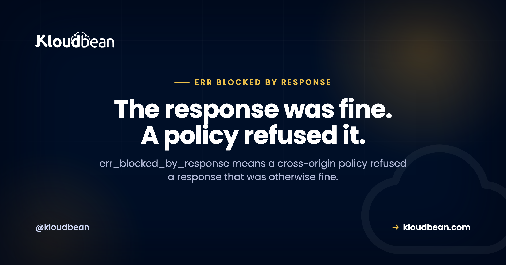

ERR_BLOCKED_BY_RESPONSE: The Header You Did Not Set

Look closely at an err_blocked_by_response entry in the Chrome console and you'll often see something strange next to it: a 200 status. The request succeeded. The server sent the bytes. Then the browser decided the document wasn't allowed to use them and threw the whole thing away. That's why searching your server logs for an error returns nothing useful, and why this one is so often reported as a mystery.
A cross-origin policy refused a response the browser had already received. The suffix after the dot names which one. NotSameOrigin means a Cross-Origin-Resource-Policy header refused the embed. NotSameOriginAfterDefaultedToSameOriginByCoep means you set Cross-Origin-Embedder-Policy: require-corp, which flipped the effective CORP default to same-origin, so cross-origin resources now have to opt in. CoepFrameResourceNeedsCoepHeader means an iframe needs its own COEP header. Adding a security middleware such as Helmet is the most common way to trigger the second one by accident.
The suffix after the dot is the actual diagnosis
Chrome appends a sub-reason, and it's the whole answer. Most people copy the part before the dot into a search box and lose the only useful information in the message.
| Suffix | What refused it | Where to look |
|---|---|---|
.NotSameOrigin | A Cross-Origin-Resource-Policy header on the resource | The resource's response headers |
.NotSameOriginAfterDefaultedToSameOriginByCoep | Your own COEP header, which changed the default | Your document's response headers |
.CoepFrameResourceNeedsCoepHeader | An embedded frame that has no COEP of its own | The iframe's response headers |
If your suffix isn't one of these three, treat the sub-reason as the thing to research rather than the generic prefix. And note the direction: only the first blames the resource. The second blames a header on your own page, which is why it catches people who just tightened their security and expected nothing to change.
Setting COEP silently flips the CORP default
This is the mechanism worth internalising, and the error name states it outright if you read to the end.
By default, with neither CORP nor CORS involved, a resource loads as though it carried a permissive cross-origin policy. Browsers are lenient here for compatibility. Nothing has to opt in, and everything works.
Now set Cross-Origin-Embedder-Policy: require-corp on your document. Per MDN's COEP reference, that means the document can only load cross-origin resources requested in no-cors mode if those resources explicitly permit it with a CORP header. The lenient default is gone. Every third-party image, font, and script now needs permission it was never asked for before.
Chrome names this in the error: after defaulted to same origin by COEP. It's telling you the block came from a default it applied because of a header you set, not from anything the other server did. Almost nobody reads that far.
The usual trigger is adding a security middleware. Helmet on an Express app sets COEP among its defaults. You add one line intending to harden the app, deploy, and every cross-origin image breaks. Nothing about the images changed. The rule governing them did.
Four ways to unblock a resource
1. Have the resource send CORP. The direct fix, when you control the origin serving it. One header on the resource's response and the block goes away:
Cross-Origin-Resource-Policy: cross-originUnderstand what you're saying: any site can now embed that resource. For public assets on a CDN or an object store that's usually fine and often what you want. For anything semi-private it deserves a moment's thought.
2. Request it in cors mode. The cleanest fix when the third party supports CORS, because MDN is explicit that requests made in cors mode aren't blocked by COEP and don't trigger COEP violations. In HTML that's one attribute:
<img src="https://cdn.example.com/logo.png" crossorigin>
<script src="https://cdn.example.com/app.js" crossorigin></script>// The JavaScript equivalent
await fetch("https://cdn.example.com/data.json", { mode: "cors" });The catch: CORS still has to permit it. Switching to cors mode moves the requirement from CORP to CORS rather than removing it, so a third party with no CORS support will now fail differently.
3. Switch COEP to credentialless. The documented escape hatch when a third party supports neither CORP nor CORS. It loads cross-origin no-cors resources without any opt-in, at a real price: requests go out without credentials, so cookies are omitted from the request and ignored in the response. Fine for public images. Not fine for anything that depends on a session.
Cross-Origin-Embedder-Policy: credentialless4. Proxy it through your own origin. The blunt instrument, and sometimes the right one. Serve the third-party asset from your domain and it stops being cross-origin. You inherit the bandwidth, the caching decisions, and the responsibility for keeping it current, so weigh that against how much you need the isolation.
One thing that will not work: setting CORP on your own document to fix a resource loaded from elsewhere. CORP is a property of the resource being loaded, not of the page loading it. And COEP never overrides CORP. If a resource's CORP restricts it to same-origin, no COEP value on your side will pull it in.
The iframe case
CoepFrameResourceNeedsCoepHeader is its own situation. When your document is cross-origin isolated, framed documents inside it need to carry a COEP header too. The policy applies to loaded resources and to resources inside iframes and nested frames, so an embedded page that says nothing about COEP can't participate.
Practically, that means embedding a third-party widget, a payment frame, or a video player inside a cross-origin-isolated page often fails until that third party sets COEP on their side. Which they may never do. If the embed matters more than the isolation, the honest answer is to drop the isolation for that page rather than fight it.
Worth knowing why isolation exists at all before you give it up. Cross-origin isolation requires COEP require-corp or credentialless together with Cross-Origin-Opener-Policy: same-origin, and it gates real capabilities: SharedArrayBuffer and unthrottled high-resolution timers. If you aren't using those, you may be paying for isolation you don't need. Check at runtime rather than guessing:
console.log(crossOriginIsolated); // true only if COOP and COEP both agreeRoll it out with Report-Only, and watch for the duplicate header
There's a report-only variant, Cross-Origin-Embedder-Policy-Report-Only, and it exists precisely so you can find out what would break before anything does. Same discipline the CSP rollout in the security headers guide recommends, applied to a header with a wider blast radius than people expect.
Reporting-Endpoints: coep-endpoint="https://example.com/reports/coep"
Cross-Origin-Embedder-Policy-Report-Only: require-corp; report-to="coep-endpoint"Reports arrive with type coep and a body naming the blockedURL, the destination such as image or script, and the violation type. That gives you the exact list of resources needing attention rather than a bug report from a customer.
The gotcha that silently disables everything: setting the header more than once, or with multiple tokens, is equivalent to unsafe-none. So a COEP header set both in your application and again in your reverse proxy doesn't double the protection. It removes it. If you're confident the header is set and the browser disagrees, count how many times it appears in the actual response:
curl -sSI https://example.com/ | grep -ic 'cross-origin-embedder-policy'
# Anything other than 1 is a problem.If you are just trying to browse
Short section, because there isn't much on your side. Test in a private window with extensions disabled, or a clean browser profile. Extensions that rewrite or inspect responses can produce this, and a clean profile settles that in seconds. If the resource loads there, the page is fine and something in your browser is intervening.
Beyond that, this is a policy decision made by the site and whoever serves its assets, and no cache clear or retry changes it. If you're not certain the code you have is this one, this site can't be reached maps every Chrome error to the layer that produced it.
Where hosting fits, honestly
The limit first, because it's the useful part. If the blocked resource sits on a third-party origin you don't control, you cannot make them send CORP. No hosting configuration reaches another company's server. That leaves the three routes above, each with a genuine cost: cors mode needs their CORS support, credentialless costs you cookies on those requests, and proxying costs you bandwidth and cache management.
What infrastructure does own is where your own headers are set and whether they're set once. On Kloudbean the reverse proxy is managed, so response headers live in a maintained configuration rather than a file someone edited eighteen months ago, which matters directly for the duplicate-header trap above. Free SSL is issued and renewed, which is a precondition rather than a nicety here, since this whole header family assumes HTTPS. Seven cloud providers, one dashboard, and free migration assistance if you're moving something already running. If you're serving your own assets and want them to be genuinely same-origin, S3-compatible object storage behind your own domain avoids the problem rather than configuring around it.
The boundary is the usual one. Managed covers the server, the stack, TLS, backups, and patching. Which headers you choose to send, and which third parties you depend on, stay yours.
Related reading
For the standard header set and a safe CSP rollout, the security headers guide, which is the natural companion to this one. Elsewhere in the browser-error family: ERR_CONNECTION_RESET for a connection killed mid-flight, ERR_SSL_PROTOCOL_ERROR when the handshake fails, and ERR_CACHE_MISS for the POST resubmission case. If you haven't pinned down which code you have, this site can't be reached is the router. On HTTPS as the precondition for all of this, custom domain and SSL, and for setting headers at the proxy layer, nginx as a reverse proxy for Node.
Set the header once, in a place you can find.
Managed servers across seven clouds with a managed reverse proxy, so response headers live in maintained configuration rather than a file someone edited long ago. Free SSL issued and renewed, S3-compatible object storage for serving your own assets, and free migration assistance included. Start at kloudbean.com or see pricing.
Managed reverse proxy · Free SSL, renewed · S3 storage · Free migration · One dashboard
FAQ
What causes ERR_BLOCKED_BY_RESPONSE?
A cross-origin policy refused a response the browser had already received, which is why the request often shows a 200 status alongside the error. The suffix after the dot names the specific policy. It is not a server fault in the usual sense, because the server did respond successfully and the browser then declined to let the document use the result.
Why does the console show a 200 status with the error?
Because the network request succeeded. The server accepted it, responded, and sent the bytes. The block happens afterwards, when the browser checks whether the document is permitted to use that response under the cross-origin policies in play. Searching your server logs for an error will find nothing, since nothing went wrong there.
What does NotSameOriginAfterDefaultedToSameOriginByCoep mean?
It means you set Cross-Origin-Embedder-Policy to require-corp, which changed the effective default for cross-origin resources from permissive to same-origin. Resources that previously loaded without any opt-in now need a Cross-Origin-Resource-Policy header permitting the embed. The error name is telling you the block came from a default the browser applied because of your header.
Why did adding Helmet break my images?
Helmet sets Cross-Origin-Embedder-Policy among its defaults, and that single header flips the rule for every cross-origin resource your page loads. Nothing about the images changed. Either add the crossorigin attribute so they are requested in cors mode, switch COEP to credentialless, or disable the COEP option in your middleware configuration if you are not relying on cross-origin isolation.
What is the difference between CORP and CORS?
CORP is a header the resource sends to say who may embed it, and it governs no-cors requests such as a plain image or script tag. CORS is a negotiation for requests made in cors mode. MDN notes that requests made in cors mode are not blocked by COEP and do not trigger COEP violations, though CORS itself must still permit them, so switching to cors mode moves the requirement rather than removing it.
What does credentialless actually cost me?
Credentials. Under Cross-Origin-Embedder-Policy set to credentialless, cross-origin no-cors resources load without needing a CORP header, but the requests are sent without credentials: cookies are omitted from the request and ignored in the response. That is harmless for public images and fonts, and breaks anything that depends on a session cookie on the third-party origin.
Can setting COEP twice cause a problem?
Yes, and it fails in the least obvious direction. Setting the header more than once, or with multiple tokens, is equivalent to unsafe-none, so the protection is removed rather than doubled. This happens when an application and a reverse proxy both add it. Count the occurrences in the real response headers rather than trusting either configuration file.
Do I need cross-origin isolation at all?
Only if you use features that require it, principally SharedArrayBuffer and unthrottled high-resolution timers. Isolation needs COEP set to require-corp or credentialless together with Cross-Origin-Opener-Policy set to same-origin. Check the crossOriginIsolated property at runtime, and if you are not using those capabilities, consider whether the compatibility cost is buying you anything.